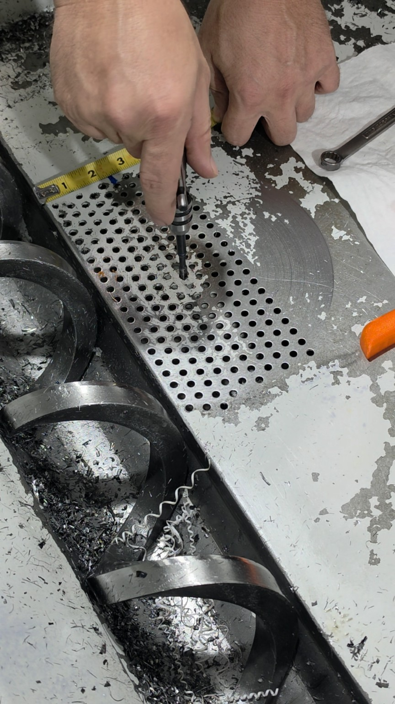
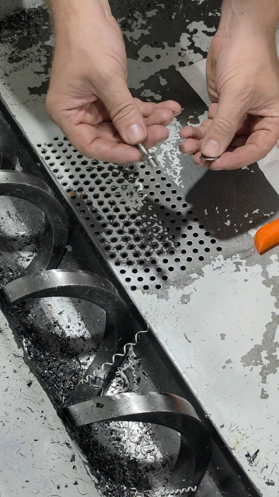
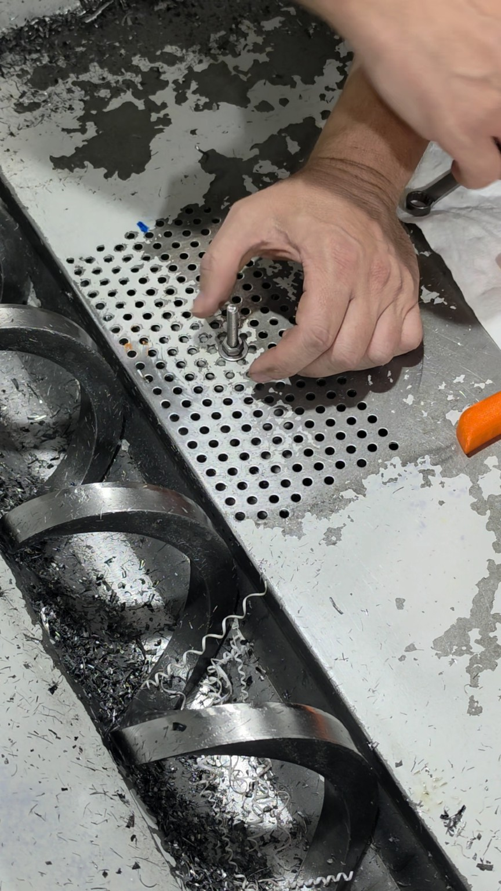
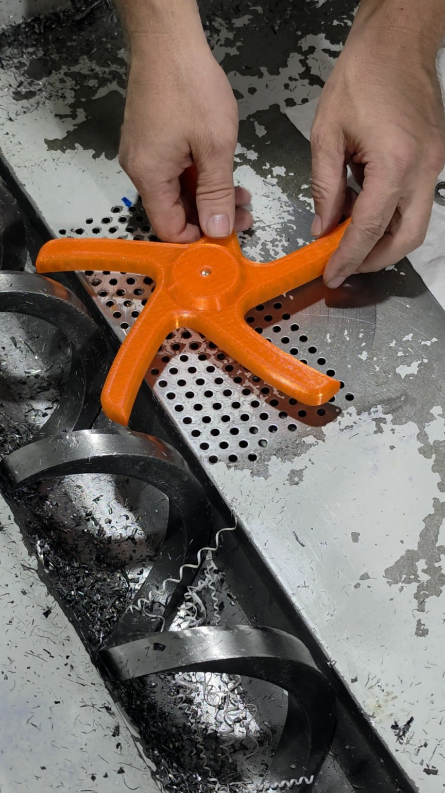
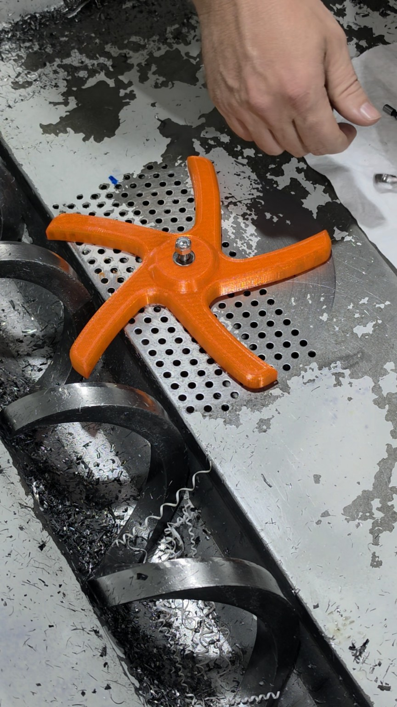
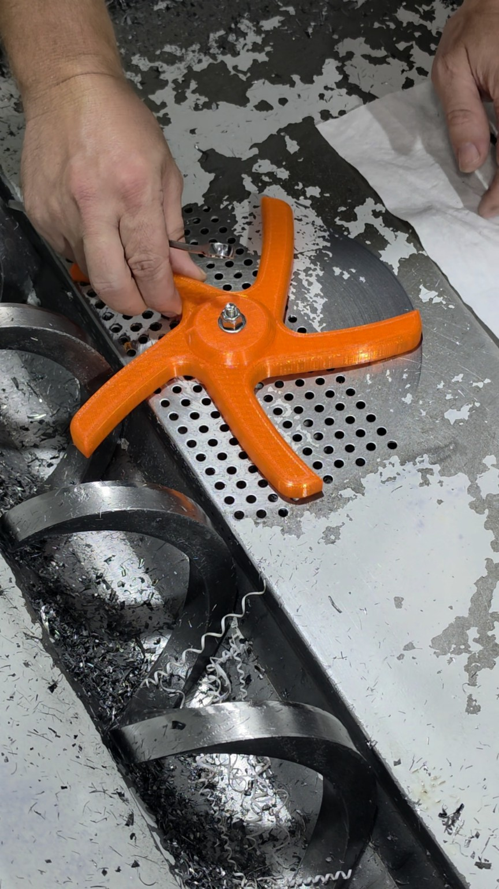

SAFETY WARNING
Before beginning installation, shut down the machine and follow the machine manufacturer's lockout/tagout procedures. Verify that all hazardous energy has been isolated. Wear appropriate personal protective equipment, including eye protection and cut-resistant gloves when handling chips or working inside the chip pan.
1Select and tap the mounting hole
Locate the 2-3/8-inch mounting row on the side away from the conveyor chute. Start with the center hole in this row. Another hole in the row may be used to adjust the Spider's side-to-side position. Tap the selected hole 1/4-20.

2Prepare the axle
Thread the jam nut approximately 1/4 inch onto the axle, then place a flat washer on the axle.

3Install the axle
Thread the axle into the tapped mounting hole with the washer between the jam nut and the chip pan. Tighten the jam nut against the washer to prevent the axle from rotating.

4Install the Spider
Slide the Spider onto the axle with the flat side of the Spider facing the chip pan.

5Install the top washer and Nylock nut
Place the second flat washer on the axle, then thread the supplied Nylock nut onto the axle.

6Set the clearance and check rotation
Adjust the Nylock nut to leave 1/32-1/16 inch of clearance between the Nylock nut and the top flat washer. This allows slight up-and-down movement while preventing excessive vertical movement. Rotate the Spider by hand to confirm it moves freely without contacting the chip pan or other components.

Do not operate the machine unless the Spider rotates freely and all hardware is secure.